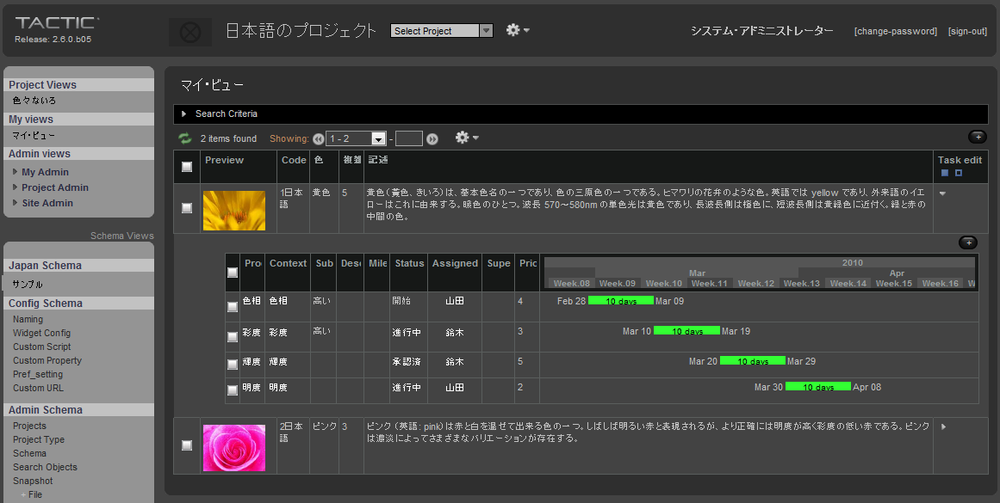
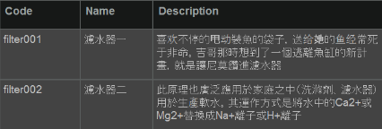

What is TACTIC?
TACTIC is an extensible, web-based data and file management system. TACTIC centralizes the following aspects of digital project workflow:
- Production data management
- Scheduling
- File (Asset) Management
- Communication
- Reporting
- and more
How does TACTIC work?
TACTIC manages two aspects of Digital Content Management: Project data and Files. TACTIC maintains both of these components in one unified source.
Project Data | Project data is stored in the Database | Project Data is the information and lists that are traditionally tracked in spreadsheets. TACTIC has the ability to list all files you manage along with task assignments, status', and scheduling data, which can be viewed in simple table formats or complex custom reports. TACTIC eliminates lost email threads, missing documents, and the need to update complex spreadsheets. The "database" is the base location for all data. i.e. notes, reports, schedules etc. What a database provides is a central location for this information. |
Content/Files | Files stored in the File System | Content refers to the actual files. When managing assets/files the directory and file naming, along with proper version control is what makes TACTIC unique. Files in TACTIC are managed externally in a file system. i.e. hard drive. The file server typically has a root assets directory. From this location, TACTIC handles the filenames and directories for that file system. |
What can I do with TACTIC?
End-Users have various roles within a project or organization. The TACTIC interface can be moulded to provide each group (department) with the ideal interface.
The TACTIC security architecture is a rules-based system where each End-User is provided with a login. The End-User is assigned to groups determined by the project leader or administrator. These rules determine what the End-User has access to within TACTIC.
Communication between groups and departments can be tracked in real-time by using the TACTIC Notes functionality. This method eliminates lost email threads and misplaced documents.
TACTIC can manage limitless amount of tasks, the status of those tasks and the location of all files being managed. TACTIC gives the End-User an accurate real-time understanding of how a project is progressing.
The table below illustrates how various End-Users may interact with TACTIC in a single organization.
Content Creator | The Content Creator often requires a view of all tasks assigned. The user can update a status, check in and check out files, log work hours and communicate with Supervisors using the Notes widget. |
Supervisor/Manager | The Manager/Supervisor is often required to schedule tasks, manage content and resources. The project schedule can be adjusted in the User Schedule or Project Tasks view. The TACTIC interface provides high level planning, communication and reporting tools. The Supervisor often has access to all views which provides the ability to plan and adjust the overall needs of a project quickly and easily. |
Client | Clients often need to review project material (documents, videos, images etc) and managing this continuous feed of content is often a hurdle. TACTIC’s built in web technology allows Clients to deliver files and provide real-time feedback without FTP or Email. TACTIC can provide Clients with only the specific views and permissions needed for each project. |
Executive | Executives require a high level view of the project. This often involves building views or "reports" that correlate data from all aspects of the project. TACTIC is able to provide cost reporting, completion, efficiency and location of bottlenecks. |
What can I do in TACTIC?
TACTIC is a transaction system allowing users to search, interact, update and report on project data and files. These interactions are carried out using a few main operations:
- Search - Search query results are often displayed in a list where you can interact with your project data.
- Insert - Additions or "Insert" new data is often done at the start of a new project. This is done through various interface tools like forms, multi inserts, CSV import and more.
- Update - Updating existing data is sometimes required. For example; updating a status, adding keywords, or changing an assigned user. Specific views and tools also allow for selecting multiple items to edit at one time.
- Check-in - Part of TACTIC’s power is the ability to check in and manage your files/assets. When you do a check-in, TACTIC versions and names the directories and files in your file server. Files remain organized and will never become lost.
- Check-out - When you need to work on some files that are already checked into TACTIC, you can check them out. This process either points you to the where the files are located, or downloads them to your computer.
- Undo/Redo - Every action carried out within TACTIC can be undone. If a mistake has been made, simply undo the transaction.
How do I access the TACTIC interface?
TACTIC is delivered as a web site. This web based solution is extremely powerful because it allows for full interaction with TACTIC and also direct integration with supported software packages.
Accessing TACTIC is as simple as visiting your server’s address (URL) in your web browser. For example:
http://yourcompany.southpawtech.com
Lets Get Started!
The following End-User documentation provides general usage of the TACTIC feature set. Additional information, tutorials, forums and documentation is available on our TACTIC Community site:
Web Browser
To access the TACTIC interface, a supported version a web browser is required.
To connect to the TACTIC server, type a URL in your web browser similar to the example below (the IP address will vary depending on the network setup of your organization). An example is shown below:
http://192.168.14.198/
When you are connected to the server, you are presented with the TACTIC login screen:

Note
If you cannot see this TACTIC login, please contact your TACTIC Administrator.
Java Support
For certain transactions to occur between TACTIC and the client computer, Java will need to be installed. Currently TACTIC supports: Java JRE 1.6.0+
To download the Java Runtime application, please visit:
When you log in to TACTIC from your browser, you will see a window similar to the following image. This section describes some of the important parts of this window.

1 - Header
1a | Project Homepage Link | The project bar shows the TACTIC logo and release. This link will also direct you back to the project selection page. |
1b | Project Thumbnail | This area shows the name of the project and thumbnail. |
1c | Project Selection Menu | A drop down list to switch between projects. |
1d | Main Action Menu | Main TACTIC Actions menu. |
1e | User Menu | Allows for editing of basic user settings |
1f | Main Help Link | Loads the Built in TACTIC Help (documentation, links etc) |
2 - Sidebar
2a | Project Views | Project Views contains links to different views with information about the project as well as workflow. |
2b | My Views | My views is a collection of views that are custom created by the login user for personal use. |
2c | My Admin | My Admin displays the Tactic system, as well as the project and adminstration schema. Access to this part of the sidebar is generally reserved for admin level users. |
3 - Main View Panel
3a | Tabs | Tactic supports loading multiple tabs, similar to how web browsers handle tabs. Views can be loaded into tabs either automatically or through right-clicking on a link. |
3b | Simple Search | In some views, a simple search will be included. The Simple Search option provides a quick and easy way to search specifically within the current view in use. |
3c | View Toolbar | In some views, there will be tools which are specific to the view. For example, the "Table" view provides an array of tools for interaction with that table. |
3d | Main Panel | The Main Panel is where the actual results of the view are displayed. This can be a table, tile layout, dashboard etc. |
Top Gear Menu

Add

Add New sType | Add a new sType to the schema. |
Add New <…existing sType from schema…> | Open a new tab and pop-up a window to insert a new item of the existing sType from the schema. |
Edit

Undo Last Server Transaction | Undo the last transaction. |
Redo Last Server Transaction | Redo the last transaction. |
Show Server Transaction Log | Display the Transaction Log in a pop-up. The log holds all the transactions since the creation of the project. |
Tools

Web Client Output Log | Load the Web Client Output Log. This log details TACTIC output as well output from statements in scripts. |
TACTIC Script Editor | Load the TACTIC Script Editor pop-up. |
Help

Documentation | Open a new page to TACTIC’s Documentation. |
TACTIC Support Community | Open a new page to TACTIC’s Support Site. |
Gear Menu for the View

Edit

Retire Selected Items | Retire the selected items. Retired items are hidden from the view, but not removed from the database. |
Delete Selected Items | Delete the selected items. Deleted items are removed from the database and are no longer available. |
Undo Last Server Transaction | Undo the last transaction |
Redo Last Server Transaction | Redo the last transaction |
Show Server Transaction Log | Load the TACTIC Transaction Log. The Transaction Log holds all the transactions since creation of project. |
Add Tasks to Selected | Add tasks to the selected items. |
Add Tasks to Matched | Add tasks to the matched items. |
File

Export All … | Export all of the item in the view. |
Export Selected … | Export all of the selected items in the view. |
Export Matched … | Export all of the Matched items in the view. |
Export Displayed … | Export all of the displayed items in the view. |
Import CSV … | Import a CSV file. |
Clipboard

Copy Selected | Copy the item that is selected in the view (indicated with a check mark) to the clipboard. |
Add Selected | Add the item that is selected in the view to the list of items already on the clipboard. |
Paste Clipboard | Paste the items from the clipboard to the current view. |
Show Clipboard Contents | Display the contents of the clipboard in a pop-up window. |
View

Column Manager | Pop-open the Column Manager. |
Create New Column | Pop-open the Create New Column Window |
Edit Current View | Edit the current view. |
Save Current View | Save over the existing view with the current configuration. |
Save a New View | Save the current view as a new view in the sidebar. |

Print Selected | Print all the selected items in the view. |
Print Displayed | Print all the displayed items in the view. |
Print Matched | Print all the matched items from the search criteria. |
Chart

Chart Items | Create a chart of displayed view. |
Chart Selected | Create a chart of the selected items. |
Tasks

Show Tasks | Add the Task Edit column to the view. |
Add Tasks to Selected | For the items that are currently selected in the view, add tasks to them. |
Add Tasks to Matched | For all the items returned by the search, add tasks to them. |
Notes

Show Notes | Add the Notes column to the view. |
Check-ins

Show Check-in History | Add the Checkin History column to the view. |
Show General Check-in Tool | Add the General Check-in Tool as a column to the view. |
Pipelines

Show Pipeline Code | Add the Pipeline Code column to the view. |
Edit Pipelines | Open the Workflow Editor in a new tab. |
TACTIC supports international unicode characters for almost all elements in the interface. Mose elements in the interface accept unicode character streams navtively. This makes it possible to customize a project in any native language.
The following show an image of using TACTIC in Japanese:

The following sections of TACTIC are capable of using unicode characters:
Notes
All notes, including the discussion widget and the notes sheet can accept unicode characters.
<show example here>
Data

Column Headers
<show example here>
Side Bar

Pipeline
<show example here>
Limitations
There are certain areas where it is recommended to use Latin-1 characters. These sections may be able to use unicode characters for certain uses, but areas have been found where these sections can cause issues.
- Project codes: project codes are used to generate the URL of the project and the database of the project. PostgreSQL accepts database unicode database names quite well but URL with unicode characters are not typically accepted or used. It is recommended that project codes stay with alpha_numeric character set with underscores as a delimiter
- Search Types: search types are used to identify a type of sobject. These search types are often identified in code. It is not typical to see unicode characters in code, although this may be changing as computers and languages support becomes more ubiquitous. However, there are still many areas in computing where unicode characters are not supported and it is possible that limitations will occur. The TACTIC interface and database generally accept unicode strings with issue.
View Names: View names are stored in the database as XML. An example of this is as follows:
<config> <xxx> <element name="foo"/> </xxx> </config>where "xxx" is the view name. Most XML libraries will accept tags with unicode characters, however, some do not support them completely. This can cause issues when doing searches and xpath through xml documents. For this reason, it is recommended to use alpha_numeric characters with underscore delimiters for view names. The view name does not typically appear in the user interface for users, so this does not usually cause an issue.

The TACTIC sidebar is the main menu system for navigating through the views in the TACTIC Project. The access rules applied to a specific account determine the contents of the sidebar as well as which views are displayed when a user is logged in.
The items in the sidebar provide links to existing views within a project. These views are built by your organization’s production manager based on a selection of columns (properties), layouts (order and column width) and a search. If a search view is available, it provides a dynamic report based on the definition of the search.
The sidebar is divided into three different categories, "Project Views", "My Views" and "Admin Views".
| The Project Views provides a way to save project wide views that everyone across the entire project would want to see. It also has a manageable list of custom user views. The Project Views can be defined by the person in the role of the project manager. Views can also be hidden from specific user groups. My View contains a list of links to views that were created by the login user themselves. These usually are created by the user to cater to their own personal work flow. |

Admin Views
Admin Views displays the project schema and the TACTIC system and administration schemas. Access to the Admin Views section of the sidebar is generally reserved for admin level users.
My Admin - My Admin holds views that will allow the users to manage My Views and My Preferences.

Manage My Views | Edits the views saved in the "My Views" section. |
My Preference | Preferences include: Debug, Web Client Logging Level, Color Palette, Language, Quick Text for Note Sheet Thumbnail Size |
You can add any view to the sidebar very easily. If you have a view open in a tab, you can simply right click on the tab and select “Add to Side Bar”. This will add the link to the sidebar under the Project Views. This will allow you to customize the sidebar and let you quickly open your important views which you use regularly.

Now, “My Dashboard” will be a link in the sidebar which takes you to this view. You can just as easily remove this link from the sidebar by right clicking on the link and selecting “Remove Link”.